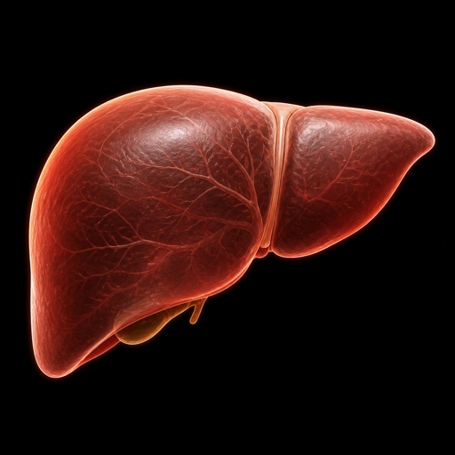

Protein
150 g supplied
LIVE ROUTING MAP
One Body, Changing Priorities
Inputs
Carbohydrates
250 g supplied
Fats
80 g supplied
Destinations
Brain Fuel
Continuous priority
74%

Liver Processing
Convert · store · release
52%
Working Muscles
Immediate performance
75%
Repair / Rebuilding
Tissue maintenance
61%
Glycogen Storage
Muscle and liver stores
68%
Fat Storage
Longer-term reserve
31%